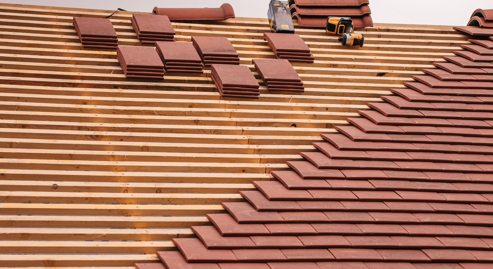
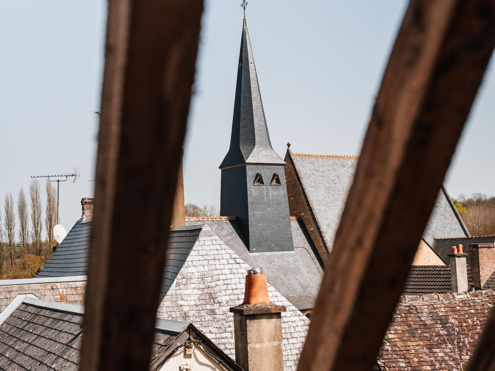
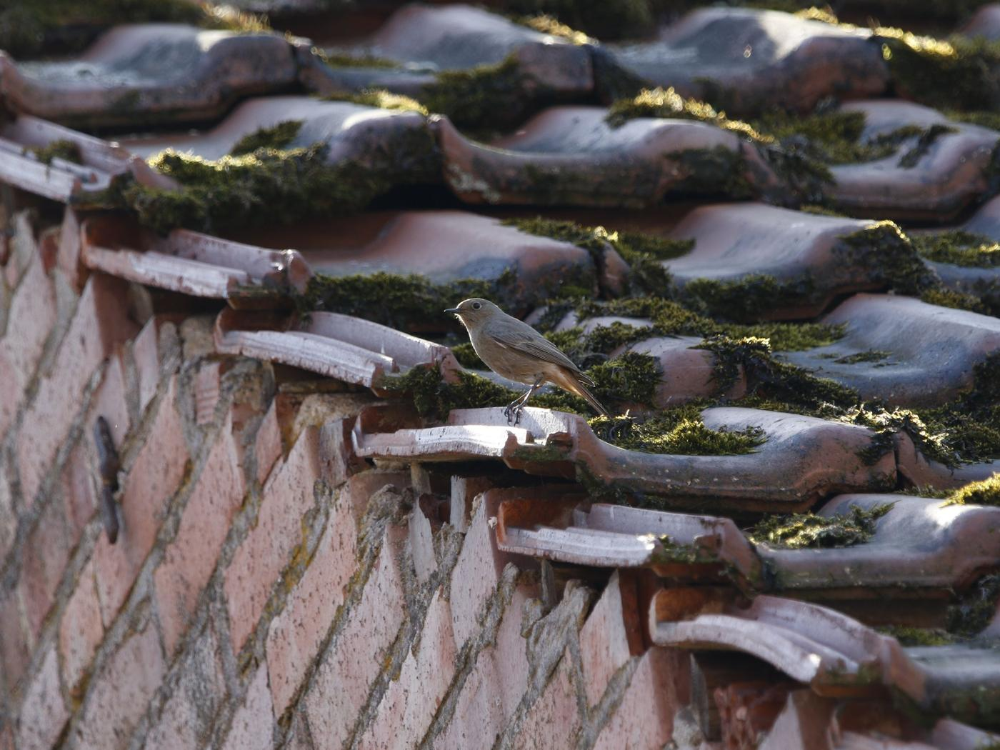
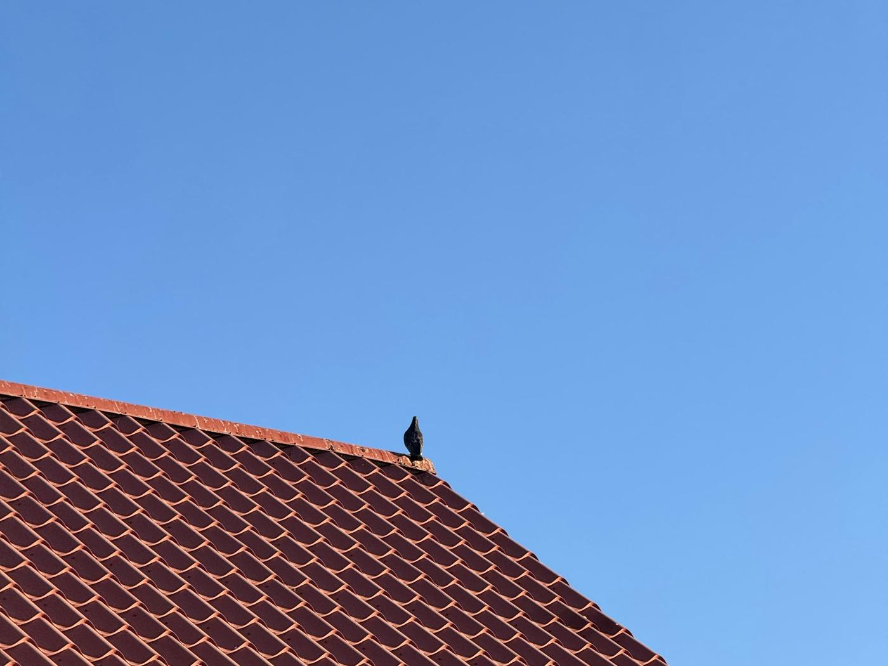
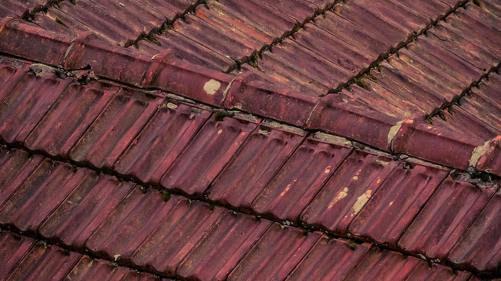
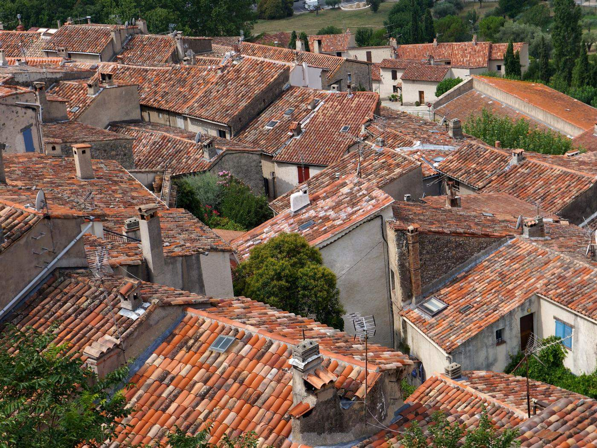

Auch · Mirande · Vic-Fezensac · tout le Gers
Un toit se refait une fois. Autant le faire bien.
Dépose, support contrôlé, tuiles neuves, zinguerie reprise : un devis écrit poste par poste, et l’artisan qui l’a chiffré sur le chantier.
Photo d’illustration : pose de tuiles neuves sur liteaux.
Couvreur dans le Gers Rénovation de toiture
Refaire un toit une fois, ou le réparer tous les hivers.
À partir d’un certain âge, une couverture ne se répare plus : elle se tient. Chaque orage ramène sa fuite, et la somme des dépannages finit par dépasser le prix d’une réfection propre.
- Devis détaillé poste par poste, pas un forfait
- Support contrôlé avant de reposer quoi que ce soit
- Tuile, zinguerie et isolation par le même artisan
- Pose conforme aux règles de l’art (DTU)
Faire chiffrer ma toiture
Quatre champs, une minute. Warren vous rappelle lui-même pour caler le diagnostic, gratuit.
Le vrai coût, c’est de repousser.
Repousser une réfection ne fait pas économiser : ça transforme un chantier de couverture en chantier de charpente, d’isolation et de plafonds.

Les dépannages s’additionnent
Une intervention par hiver pendant cinq ans finit par coûter le prix d’un pan refait proprement, et le toit reste vieux.
Le support finit par céder
Tant que le bois est sain, la réfection reste un chantier de couverture. Quand il est mort, le devis change de catégorie.
L’isolation ne sert plus
Une laine qui a pris l’eau n’isole plus. On la découvre en déposant, et elle s’ajoute au chantier.
La vente s’en ressent
Un toit visiblement en fin de vie se négocie à la baisse, bien au-delà du coût réel des travaux.
Déposer, vérifier, reposer.
Un chantier de réfection se juge sur ce qui se passe entre la dépose et la pose : c’est là que se décide si le toit tiendra cinquante ans ou dix.
- 01
Diagnostic et devis
Montée sur le toit, état de la couverture et du support, mesures. Devis écrit, poste par poste.
- 02
Dépose et protection
Échafaudage, protection des abords, dépose de l’ancienne couverture, évacuation.
- 03
Support et isolation
Liteaux et chevrons contrôlés, pièces mortes remplacées, écran sous toiture, isolation si prévue.
- 04
Couverture et zinguerie
Tuiles neuves, faîtage, rives, gouttières. Chantier nettoyé en fin de journée.
Compris à chaque intervention
- Échafaudage et protection des abords
- Dépose et évacuation de l’ancienne couverture
- Contrôle et reprise du support
- Écran sous toiture
- Tuiles neuves et zinguerie complète
- Nettoyage de fin de chantier
Ses chantiers, pas une banque d’images.
Mirande, Auch, et ailleurs dans le Gers : les photos que Warren prend lui-même sur ses chantiers, maisons comme commerces.


La différence se voit de la rue.
Une couverture neuve, ce n’est pas seulement un toit propre : c’est une maison qui cesse de perdre de la valeur à chaque hiver.


Photos d’illustration du métier. Sa rénovation de toiture à Mirande est plus haut, en photos réelles.
Combien coûte une rénovation de toiture ?
C’est le poste où un prix inventé fait le plus de dégâts. Une réfection se chiffre après montée sur le toit, mesures prises et support examiné.
Dépose, reprise du support, tuiles neuves et zinguerie sur un versant.
Réfection de l’ensemble, zinguerie, isolation si souhaitée, évacuation comprise.
Le chiffrage est gratuit, remis après diagnostic, détaillé poste par poste. Rien ne s’ajoute en cours de chantier sans votre accord.

La tuile dure longtemps, ce qui la porte beaucoup moins.
Une réfection bien faite, c’est un support sain et une pose dans les règles. Le reste se voit de la rue ; ça, ça se voit dans trente ans.
Ce que disent ses clients.
Ce qu’il ne fait pas :
Tout le Gers, depuis Mouchès.
L’atelier est à Mouchès, entre Auch et Mirande : le centre du département est à moins d’une demi-heure. La Haute-Garonne et les Pyrénées-Atlantiques se font aussi, sur demande.
- Auch
- Mirande
- Vic-Fezensac
- Masseube
- Marciac
- Seissan
- Fleurance
- L’Isle-Jourdain
- Condom
- Gimont
- Lectoure
- Eauze
- Marciac
- Samatan
- Lombez
- Nogaro
- Riscle
- Montesquiou
- Pavie
- Barran
- Castelnau-Barbarens
- Saint-Jean-le-Comtal
- Montréal
- Plaisance
- Mauvezin
Votre commune n’est pas dans la liste ? Un appel suffit pour savoir si le déplacement est possible.

Vous vous demandez…
Une question qui n’est pas là ? Vous aurez l’artisan au bout du fil, pas un commercial.
06 16 95 49 47Faut-il refaire tout le toit ou un seul pan ?
Peut-on réutiliser les anciennes tuiles canal ?
Combien de temps dure un chantier ?
Et s’il pleut pendant le chantier ?
Peut-on isoler en même temps ?
Faut-il une autorisation d’urbanisme ?
Quelles garanties sur les travaux ?
Comment se passe le paiement ?
Faites chiffrer, vous déciderez ensuite.
Un devis détaillé ne vous engage à rien, et c’est le seul moyen de savoir si votre toit vaut encore la peine d’être réparé.
- Un rappelDans la journée, par Warren lui-même.
- Un diagnosticSur le toit, gratuit, photos à l’appui.
- Un devis écritPoste par poste, sans travaux superflus.
- Vous décidezRien n’est engagé tant que rien n’est signé.
Atelier : Los Beasos, 32300 Mouchès
Demander mon devis
Quatre champs, un rappel dans la journée.